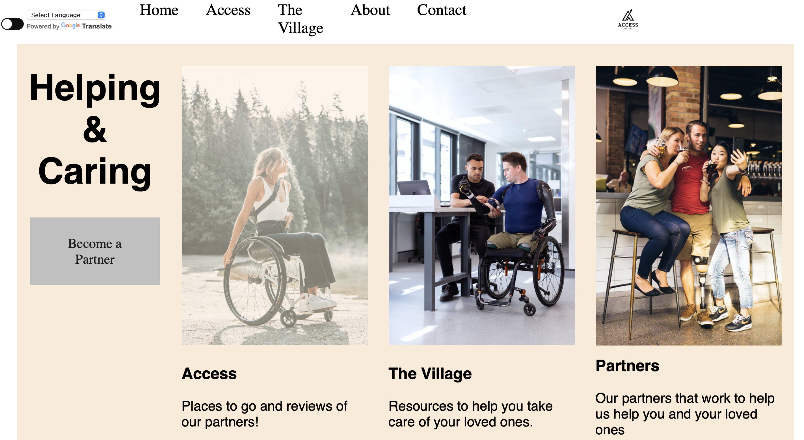
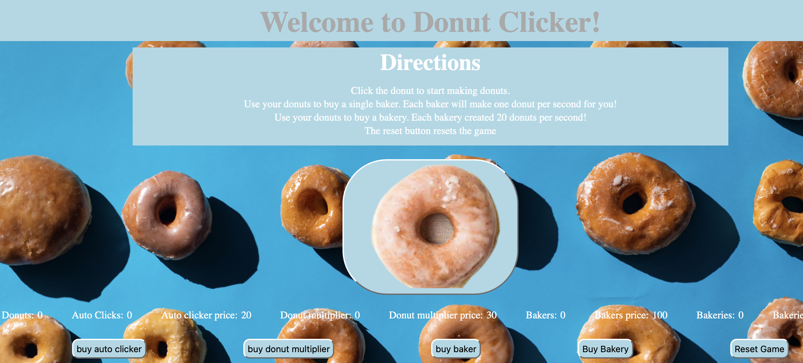
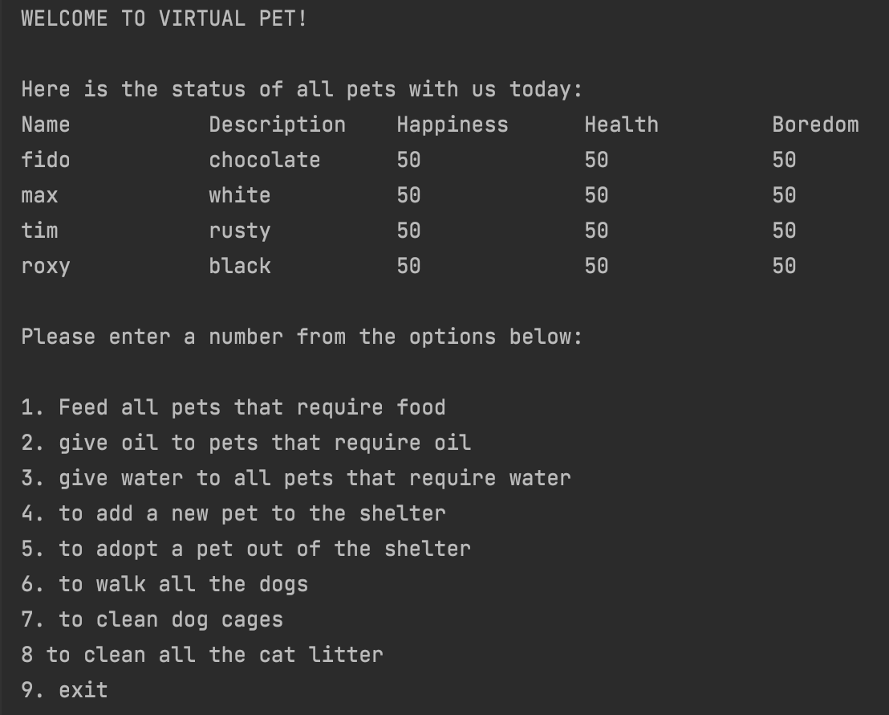

Access abilities

A web application designed to assist persons with a disability or those who are care givers to those with a disability find public spaces that are accessible and/or other reasources within their perspective community. The team of developers and myself designed this app with the idea that the user comes first. That being said we wanted to make sure the app offered as many accessiblity features as possible! With this app we created it using a custom built API, java back-end, and the front-end was designed with html, css and javaScript. We utilized Scrum/Agile methodology along with github's project board feature during the alotted time for the project. We held weekly meetings on zoom for our standups to talk about previous task worked on, any blockers we may have, and task we are working on next. This project was easily my favorite so far!
Donut Clicker

This web application mimics the web app cookies clicker with a donut theme. I built this using html, css, and javaScript. The user clickers the big donut button essentially to add to a donut counter. There are options to buy autoclickers, multipliers, bakers, and bakeries. The whole reasoning behind those options are simply to rack up more donuts faster without having to manually click the donut button. With the autoclickers, bakers, and bakery options, their functionality works by a timer interval function...so after a set time period has passed they're activated automatically. Of course the more of those you have the faster your donut counter will imcrease!
Virtual Pet Amok

This application allows the user to interact with virtual pets that are in a shelter (collection: hash map). Some pets are regular cats/dogs others are robotic cats/dogs. That being said, I have immplemmented different ways in which these 2 types of pets are fed and hydrated. Users have the ability to interact with all pets inside the shelter(hash map) at once by feeding, hydrating, playing with, etc, or a single pet at a time. Users are also able to add a new pet into the shelter or adpot a pet out the shelter. Both of those choices will result in the hash map shrinking or growing in size. This project utilizes all 4 of the OOP pilars (abstraction, polymorphism, inheritance, and encapsulation).